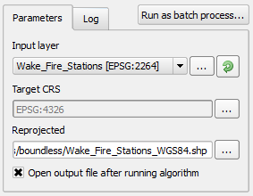

In the Reproject layer algorithm dialog, do:
-
Set the Input layer to the Wake_Fire_Stations layer.
-
Click the '...' button next to Target CRS field and choose EPSG:4326.
-
Use the '...' button next to Reprojected and select Save to file... to choose the output's path and file name. You can also type the path and filename directly, but note that the filename extension determines its format. Use .shp to export to a Shapefile.
-
Enable the Open output file after running algorithm option.

-
Click on Run to execute the algorithm.
The new reprojected layer will load in the map canvas.
This step concludes the lesson. click Finish to end the lesson.